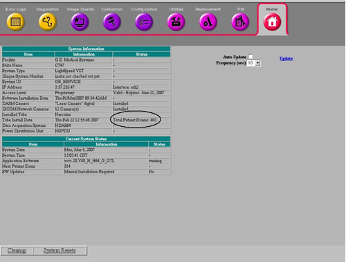
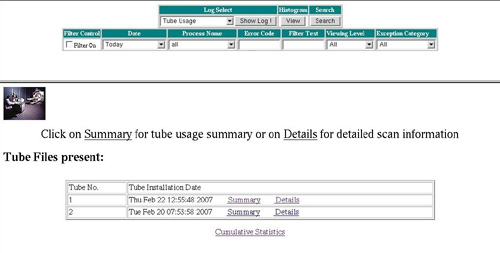
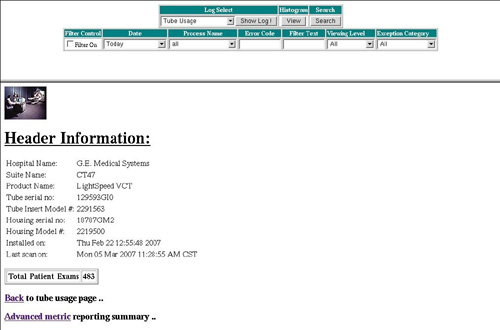
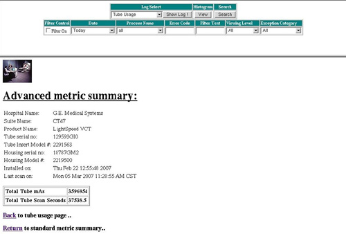
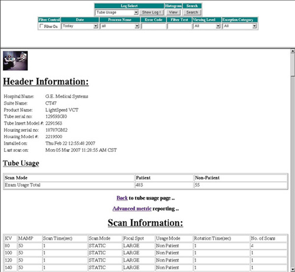
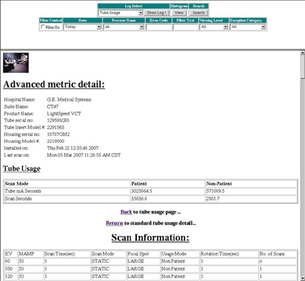
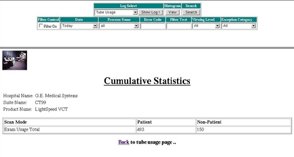
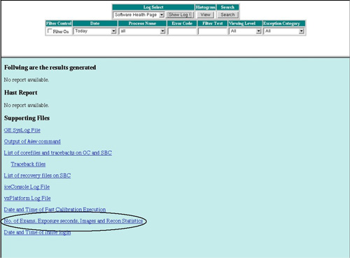
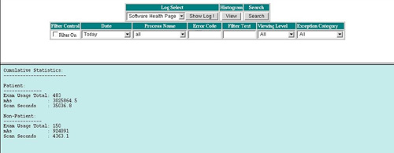

Operating Documentation
Direction 5193574-800, Rev# 22
LightSpeed 7.X Service Methods
Module Version 1.0, Version Date 4/4/07
Operating Documentation |
| Last Revised on: | April 4, 2007 |
This procedure applies to systems with software version 07MWxx.x and later.
The Common Service Desktop (CSD) is used to display information about both the currently installed tube and previously installed tubes.
To access tube usage records, under [Error Log] on the CSD, select [Tube Usage Statistics]. The Tube Usage viewer appears, providing the following three levels of viewing tube usage information:
Summary
Details
Cumulative Statistics
| NOTE: | For tube warranty purposes, “Total Patient Exams” is the correct number to use in reporting tube unit failure. “Total Patient Exams” can be found on the [Home] tab of the CSD. (See Illustration 1.) |
Illustration 1: Total Patient Exams on Common Service Desktop [Home] Tab

The Tube Usage Initial Screen allows you to select Summary, Details, or Cumulative Statistics subscreens. (See Illustration 2.) The Tube Usage Initial Screen also lists any other system installed tubes by descending install date.
Illustration 2: Tube Usage Initial Screen

The Tube Usage Default Summary screen presents selected Tube Unit information, specifies Site information, and reports “Total Patient Scans” for the selected Tube Unit, as shown in Illustration 3.
Illustration 3: Tube Usage Default Summary Subscreen

The Tube Usage Default Summary Screen includes a link to an Advance Metric subscreen. The Tube Usage Summary Advance Metric screen presents the same selected Tube Unit information and Site information, in addition to reporting “Total Tube mAs” and “Total Tube Scan Seconds” for the selected Tube Unit. (See Illustration 4.)
Illustration 4: Tube Usage Summary Advance Metric Screen

The Tube Usage Default Details screen presents selected Tube Unit information, specifies Site information and reports “Patient Exam Usage Total”, “Non-Patient Exam Usage Total” and Scan details for the selected Tube Unit, as shown in Illustration 5.
Illustration 5: Tube Usage Default Details Screen

The Tube Usage Default Details Screen includes a link to an Advance Metric subscreen. The Tube Usage Details Advance Metric screen presents the same selected Tube Unit information and Site information, in addition to reporting “Patient Tube mA Seconds”, “Non-Patient Tube mA Seconds”, “Patient Scan Seconds”, “Non-Patient Scan Seconds” and scan details for the selected Tube Unit. (See Illustration 6.)
Illustration 6: Tube Usage Details Advance Metric Screen

The Tube Usage Cumulative Statistics screen reports the “Patient Exam Usage Total” and “Non-Patient Exam Usage Total” for all tubes that have been installed on the system. (See Illustration 7.)
Illustration 7: Tube Usage Cumulative Statistics Screen

You can display the Software Health Page by selecting [Software Health Page]from the Log Select menu and pressing [Show Log]. The Software Health Page includes a link to a Cumulative Tube Usage Statistics Screen, as shown in Illustration 8.
Illustration 8: Software Health Page Screen

The Cumulative Tube Usage Statistics Screen presents Patient and Non-Patient Cumulative Statistics for “Exam Usage Total”, “mAs,” and “Scan Seconds”, as shown in Illustration 9.
Illustration 9: Cumulative Tube Usage Statistics Screen
